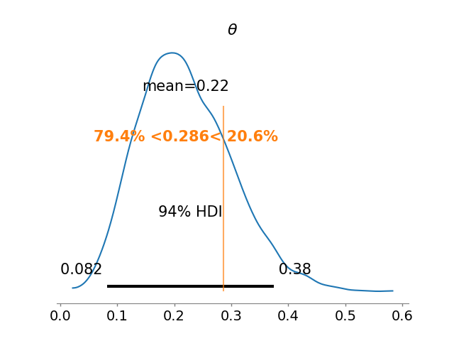
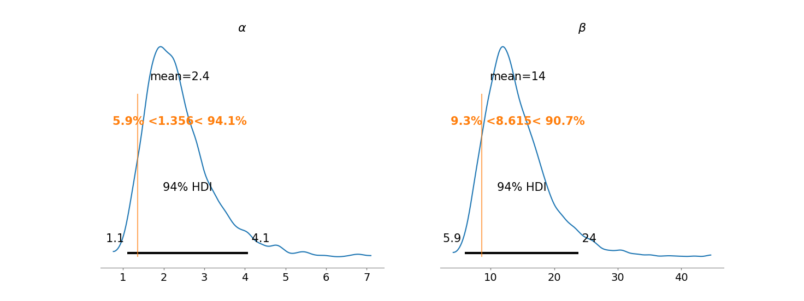
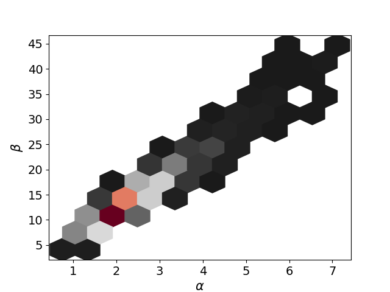
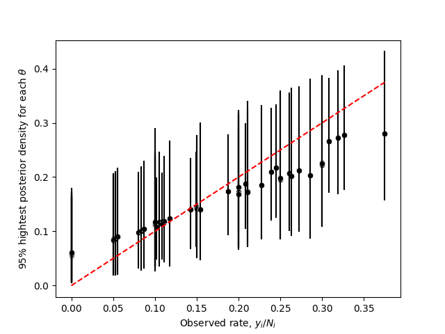
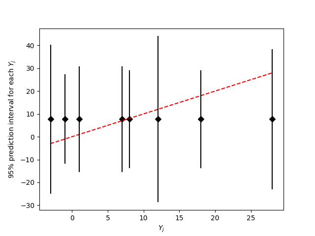
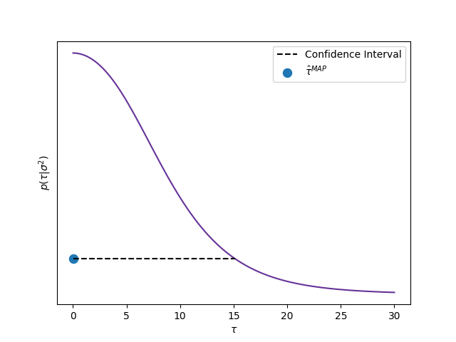
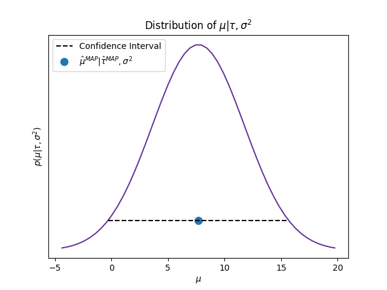
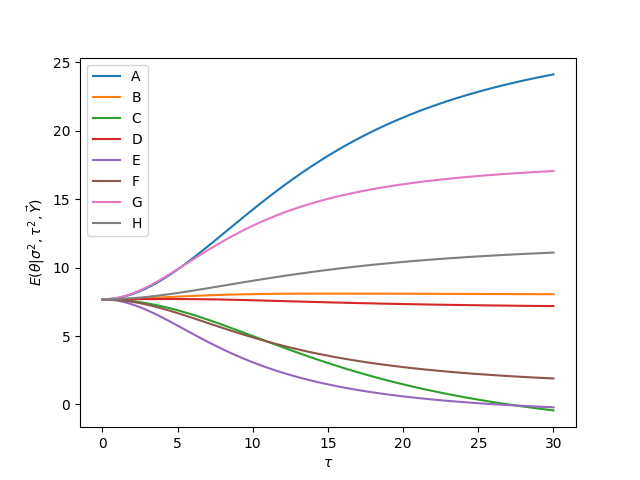
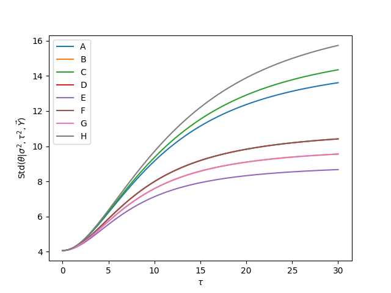
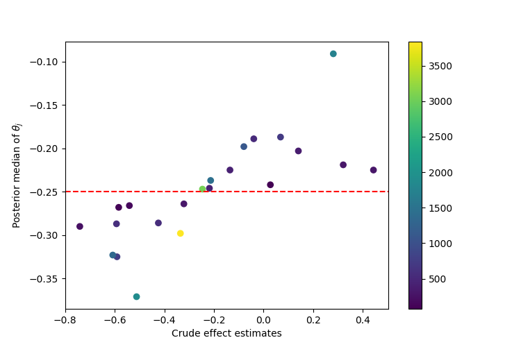

14. Hierarchical models#
14.1. General framework#
In their simplest version, in hierarchical models the parameters \(\theta_j\) come from a random sample of the prior distribution, which is determined by a vector of hyperparamters \(\phi\), that is
In general \(\phi\) is unknown and, this, has its own (hyper)prior distribution \(p(\phi)\).
Thus, the joint prior distribution is
and the joint posterior distribution satisfies that
When specifying a prior distribution for \(\phi\), we have to take special care when an improper distribution is used and check that the posterior distribution exists, this usually requires a tremendous mathematical effort. We can avoid this problem if we restrict the hyperprior to be a proper distribution.
14.1.1. Posterior conditional distribution of parameters, \(p(\theta|\phi,\mathbf{Y})\)#
Note that the posterior conditional of \(\theta\) satisfies
where \(f(\phi,\mathbf{Y})\) is the “constant” of proportionality, which depens on \(\phi\) and \(\mathbf{Y}\).
14.1.2. Posterior distribution of hyperparameters, \(p(\phi|\mathbf{Y})\)#
The posterior of \(\phi\) can be calculated marginalizing the joint posterior with respect to \(\theta\), that is
Or, using the formula of conditional probability:
14.2. Rat tumor#
This example was taken from section 3.7 of [GCS+13]. The data for the example was taken from [Tar82]. The code with all the details is 22_RatTumorEmpiricalFullBayes.ipynb in the repository of the course.
As commented previously, in the evaluation of drugs for possible clinical application, studies are routinely performed on rodents. For a particular study the immediate aim is to estimate \(\theta\), the probability of tumor in a population of female laboratory rats that receive a zero dose of the drug (a control group). The data show that 4 out of 14 rats developed endometrial stromal polyps (a kind of tumor). It is natural to assume a binomial model for the number of tumors, given \(\theta\). For convenience, we select a prior distribution for \(\theta\) from the conjugate family, \(\theta\sim\textsf{Beta}(\alpha,\beta)\).
14.2.1. Empirical Bayes#
Using the historical data and the method of moments we can set some values for \(\alpha\) and \(\beta\). Since \(\theta\sim\textsf{Beta}(\alpha,\beta)\), then
Let be \(\bar{Y}_j=Y_j/n_j\), \(\bar{\bar Y}\) the mean of \(\bar Y_1,\ldots,\bar Y_J\), and \(s_{\bar{Y}}^2\) their variance.
Then, we have to find the values of \(\alpha\) and \(\beta\) such that
Solving these equations, we find that
Using this simple estimate of the historical population distribution as a prior distribution for the current experiment yields a Beta(\(5.356,18.615\)) posterior distribution for \(\theta\).
The next figure shows the posterior distribuion of \(\theta\), with a vertical line is the observed proportion 4/14.
Note that the prior information has resulted in a posterior distribution substantially lower than the crude proportion 4/14.
14.2.2. Full Bayesian approach#
When we use the estimated values for \(\alpha\) and \(\beta\), we act as if those values where the real ones, which eliminates all the uncertainty that we have on the hyperparameters. Instead of this empirical approach, we can choose for a full Bayesian approach and assign a hyperprior for \(\alpha\) and \(\beta\). Assume that we have \(J\) historical data, and model
with the number of rats, \(n_j\) known, and
We just need to specify a prior for \((\alpha,\beta)\), but we have to check that the posterior exists.
Thus,
That is, given \(\alpha\) and \(\beta\), the elements of \(\theta\) are independent and follow a beta distribution
so
Expressing \(p(\theta|\alpha,\beta,\mathbf{Y})\) as:
we get that
Then,
In [GCS+13], the authors proposed the noninformative prior \(p(\alpha,\beta)\propto(\alpha+\beta)^{-5/2}\), which yields a proper posterior distribution.
The next figure shows the marginal posterior distributions of \(\alpha\) and \(\beta\), the vertical lines represent their empirical estimators. Note that in both cases they understimate the possible values for \(\alpha\) and \(\beta\).
In the next figure I present the joint posterior of \(\alpha\) and \(\beta\), note that the joint posterior is far from a gaussian distribution. This is a typical behavior for hyperparameters in hierarchical models.
Finally the nect image shows credible intervals for all the \(\theta_j\), \(j=1,\ldots,J\) against their observed proportions. Note that cases where the proportion is low tend to be move upward, and viceversa, when the proportion is high the posterior estimator tends to move downward
14.3. Normal hierarchical model#
For this section I recommend to check:
The article [GomezMendezA23].
14.4. Parallel experiments in eight schools#
This example was taken from section 5.5 of [GCS+13]. The code with all the details is 23_EducationalTestingExample.ipynb in the repository of the course.
A study was performed for the Educational Testing Service to analyze the effects of special coaching programs on test scores. Separate randomized experiments were performed to estimate the effects of coaching programs for the SAT-V (Scholastic Aptitude Test-Verbal) in each of eight high schools. We consider the sampling variances known, for all practical purposes, because the sample sizes in all the eight experiments were relatively large.
14.4.1. Separate Estimates#
We can consider each experiment separately with the following model:
and
so the posterior would be
Treatening each experiment separately yields 95% posterior intervals which overlap substantially.
14.4.2. Complete pooled estimate#
The general overlap in the posterior intervals based on independent analyses suggests that all experiments might be estimating the same quantity. Under the hypothesis that all experiments have the same effect and produce independent estimates of this common effect, we could treat the data as eight normally distributed observations:
If we model \(p(\theta)\propto 1_{\mathbb{R}}(\theta)\) then \(\theta|\mathbf{Y}\sim\textsf{Normal}(\bar{Y}_{\cdot\cdot}, \varphi^2)\), where
and
To know the goodness-of-fit of the model we can consider the posterior predictive, which would be given by $\(Y_j|\mathbf{Y}\sim\textsf{Normal}(\bar{Y}_{\cdot\cdot}, \sigma_j^2+\varphi^2)\)$
From the previous figure we can see that the complete pooling might be a good model to explain the data.
14.4.3. Hierarchical model#
We get the MAP for \(\tau\) and calculate an approximate credible interval of 0.95 of posterior probability using the asymptotic behavior of the posterior distribution. In the enxt figure we show the posterior distribution of \(\tau\), where we can observe that the MAP estimator correspond with \(\tau=0\), that is, with the complete pooling model.
We get a full Bayesian estimate for \(\mu\) using \(\hat{\mu}\) evaluated in the MAP of \(\tau\). In the next figure I present its conditional posterior distribution setting \(\tau=\tau^{\text{MAP}}\).
The next plots show the effect of \(\tau\) in the posterior means of treatment effects, \(E(\theta_j|\sigma,\tau,\mathbf{Y})\) and the posterior standard deviation of treatment effects, \(\textsf{Std}(\theta_j|\sigma,\tau,\mathbf{Y})\)
 14.5. Meta-analysis#
Example taken from section 5.6 of [GCS+13]. The original data for the example are from [YPL+85]. The code with all the details is 24_MetaAnalysisCombiningStudies.ipynb in the repository of the course.
Meta-analysis is a process of summarizing and integrating the findings of research studies in a particular area.
The data in the example summarize mortality after myocardial infarction in 22 clinical trials, each consisting of two groups of heart attack patients randomly allocated to receive or not receive beta-blockers (a family of drugs that affect the central nervous system and can relax the heart muscles). The aim of a meta-analysis is to provide a combined analysis of the studies that indicates the overall strength of the evidence for a beneficial effect of the treatment under study.
If clinical trial \(j\) involves the use of \(n_{0j}\) subjects in the control group and \(n_{1j}\) in the treatment group, giving rise to \(y_{0j}\) and \(y_{1j}\) deaths in control and treatment groups, respectively, then the usual sampling model involves two independent binomial distributions with probabilities \(p_{0j}\) and \(p_{1j}\), respectively. Estimands of interest include the odds ratio
However, for a number of reasons, including interpretability and the fact that its posterior distribution is close to normality, we concentrate on inference for the logarithm of the odds ratio, which we label \(\theta_j=\log\rho_j\).
We calculate the logarithms of the odds:
with approximate variance
For this data we are not considering the uncertainty in the variance. That is, we will act as if the variance is known and given by the observed one. Thus, we use the model:
The next table presents the data, the posterior median for each \(\theta\) and its corresponding ETI.
| Study | ControlDeaths | ControlTotal | TreatedDeaths | TreatedTotal | LogOdds | Sigma | ETI 2.5% | Median | ETI 97.5% | |
|---|---|---|---|---|---|---|---|---|---|---|
| 0 | 1 | 3 | 39 | 3 | 38 | 0.028 | 0.850 | -0.596 | -0.244 | 0.149 |
| 1 | 2 | 14 | 116 | 7 | 114 | -0.741 | 0.483 | -0.668 | -0.286 | 0.014 |
| 2 | 3 | 11 | 93 | 5 | 69 | -0.541 | 0.565 | -0.623 | -0.270 | 0.034 |
| 3 | 4 | 127 | 1520 | 102 | 1533 | -0.246 | 0.138 | -0.438 | -0.248 | -0.043 |
| 4 | 5 | 27 | 365 | 28 | 355 | 0.069 | 0.281 | -0.448 | -0.193 | 0.155 |
| 5 | 6 | 6 | 52 | 4 | 59 | -0.584 | 0.676 | -0.605 | -0.261 | 0.074 |
| 6 | 7 | 152 | 939 | 98 | 945 | -0.512 | 0.139 | -0.619 | -0.367 | -0.168 |
| 7 | 8 | 48 | 471 | 60 | 632 | -0.079 | 0.204 | -0.418 | -0.201 | 0.067 |
| 8 | 9 | 37 | 282 | 25 | 278 | -0.424 | 0.274 | -0.606 | -0.287 | -0.017 |
| 9 | 10 | 188 | 1921 | 138 | 1916 | -0.335 | 0.117 | -0.485 | -0.297 | -0.123 |
| 10 | 11 | 52 | 583 | 64 | 873 | -0.213 | 0.195 | -0.483 | -0.241 | 0.027 |
| 11 | 12 | 47 | 266 | 45 | 263 | -0.039 | 0.229 | -0.434 | -0.201 | 0.098 |
| 12 | 13 | 16 | 293 | 9 | 291 | -0.593 | 0.425 | -0.661 | -0.282 | 0.020 |
| 13 | 14 | 45 | 883 | 57 | 858 | 0.282 | 0.205 | -0.339 | -0.095 | 0.276 |
| 14 | 15 | 31 | 147 | 25 | 154 | -0.321 | 0.298 | -0.547 | -0.264 | 0.025 |
| 15 | 16 | 38 | 213 | 33 | 207 | -0.135 | 0.261 | -0.475 | -0.231 | 0.066 |
| 16 | 17 | 12 | 122 | 28 | 251 | 0.141 | 0.364 | -0.464 | -0.203 | 0.165 |
| 17 | 18 | 6 | 154 | 8 | 151 | 0.322 | 0.553 | -0.523 | -0.217 | 0.182 |
| 18 | 19 | 3 | 134 | 6 | 174 | 0.444 | 0.717 | -0.544 | -0.225 | 0.151 |
| 19 | 20 | 40 | 218 | 32 | 209 | -0.218 | 0.260 | -0.510 | -0.240 | 0.044 |
| 20 | 21 | 43 | 364 | 27 | 391 | -0.591 | 0.257 | -0.669 | -0.322 | -0.087 |
| 21 | 22 | 39 | 674 | 22 | 680 | -0.608 | 0.272 | -0.662 | -0.317 | -0.063 |
The next table shows the posterior median and ETI for \(\theta,\mu,\exp\{\mu\}\) and \(\tau\).
Parameter |
ETI 2.5% |
Median |
ETI 97.5% |
|---|---|---|---|
\(\theta\) |
-0.626 |
-0.249 |
0.135 |
\(\mu\) |
-0.376 |
-0.248 |
-0.115 |
\(\exp\{\mu\}\) |
0.687 |
0.78 |
0.892 |
\(\tau\) |
0.047 |
0.139 |
0.308 |
In the original published discussion of these data, it was remarked that it seems and ‘unusually narrow range of uncertainty’. The Bayesian analysis suggests that this was due to the use of an inappropriate model that had the effect of claiming all the studies were identical. In mathematical terms, complete pooling makes the assumption that the parameter \(\tau\) is exactly zero, whereas the data supply evidence that \(\tau\) might be close to zero, but might also plausibly be as high as 0.3. The next table shows the posterior median and ETI of \(\mu\) when \(\tau=0\).
Parameter |
ETI 2.5% |
Median |
ETI 97.5% |
|---|---|---|---|
\(\mu\vert\tau=0\) |
-0.359 |
-0.26 |
-0.161 |
\(\exp\{\mu\}\vert\tau=0\) |
0.699 |
0.771 |
0.851 |
We make a scatterplot of the crude effect estimates versus the posterior median effect estimates for the 22 studies, the color of each point depends on the size of the population in the study. We observe that the studies with the smallest sample sizes are partially pooled the most toward the mean \(\mu\).
